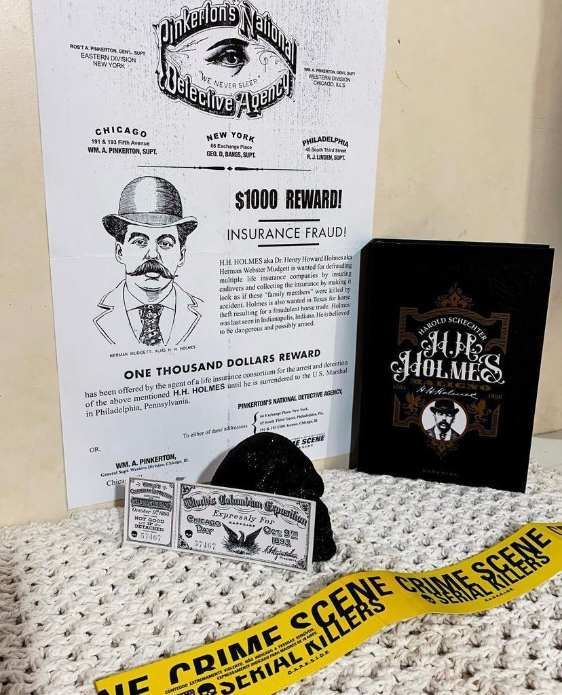

H. H. Holmes: Maligno
“O psicopata da Cidade Branca”
Os assassinos em série não são uma invenção do século XX. Na segunda metade do século XIX, um homem aterrorizou os Estados Unidos e pode ter sido responsável por centenas de mortes. Se trata de Herman Webster Mudgett, mais conhecido pelo nome de dr. Henry Howard Holmes. Holmes confessou 27 assassinatos, mas muitos mais podem estar em sua conta. Ele construiu um hotel para a Feira Mundial de Chicago, evento criado para celebrar os quatrocentos anos da chegada de Colombo à América. A edificação era um labirinto de portas e alçapões, com armadilhas em diversos cômodos. Neste local, presume-se que Holmes pode ter matado um número muito grande de pessoas que iam à cidade para o evento. A crueldade calculada de construir um hotel infernal com mais de cem quartos para matar já seria suficiente para garantir o lugar de Holmes na história do crime, mas ainda há uma série de golpes, esquemas, múltiplos casamentos e mais assassinatos a sangue frio.
Escrito por Harold Schechter que é um escritor norte-americano de True Crime especializado em Serial Killers podemos dizer que sua pesquisa foi muito bem feita e cobriu todos os aspectos possíveis da vida desse psicopata,além da narrativa te transportar para o século XX. Aqui você vai entender todos os aspectos da vida de Holmes e todo contexto histórico de Chicago na época. A edição é magnífica, linda e fica a cargo da @darksidebooks como sempre.